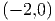
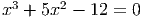

E 8.1.1. Resolva o problema de valor inicial dado por
Resposta. 0,4496 com h = 0,1 e 0,4660 com h = 0,01. A solução exata vale y(1) =  = 2 ≈ 0,4678 ♢
E 8.1.2. Resolva o problema de valor inicial dado por
Resposta. y(2) ≈ 0,430202 e z(2) = 0,617294 com h = 0,2, y(2) ≈ 0,435506 e z(2) = 0,645776 com h = 0,02, y(2) ≈ 0,435805 e z(2) = 0,648638 com h = 0,002 e y(2) ≈ 0,435832 e z(2) = 0,648925 com h = 0,0002. ♢
E 8.1.3. Resolva o problema de valor inicial dado por
Resposta. y(2) ≈ 1,161793 com h = 0,1, y(2) ≈ 1,139573 com h = 0,01, y(2) ≈ 1,137448 com h = 0,001, y(2) ≈ 1,137237 com h = 0,0001, y(2) ≈ 1,137216 com h = 0,00001 ♢